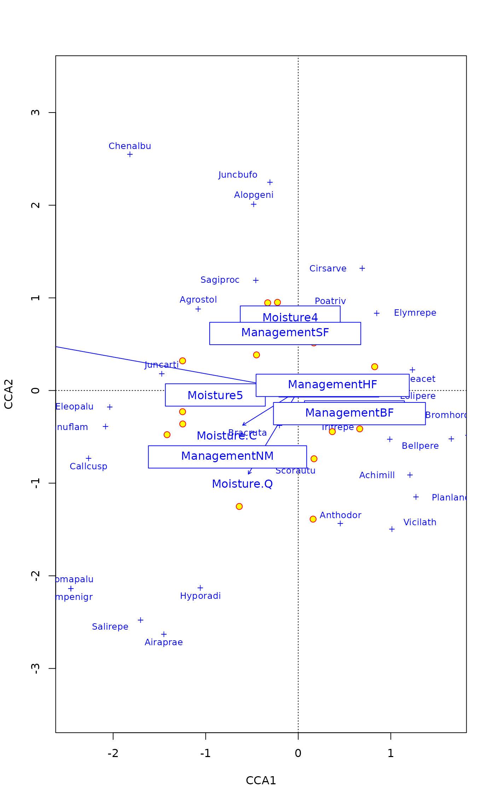
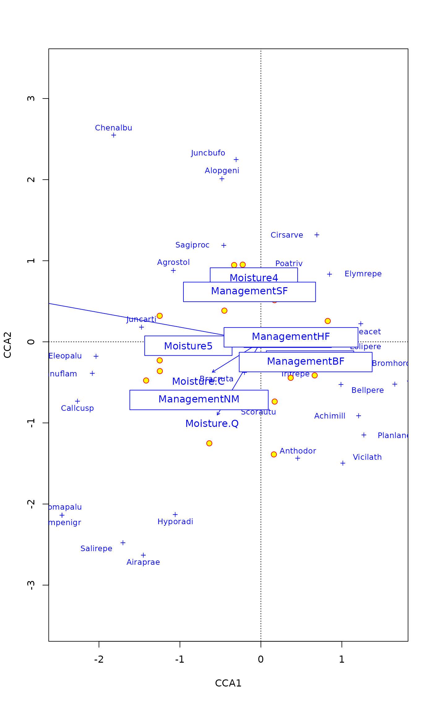

Plot or Extract Results of Constrained Correspondence Analysis or Redundancy Analysis
plot.cca.RdFunctions to plot or extract results of constrained correspondence analysis
(cca), redundancy analysis (rda) or
constrained analysis of principal coordinates (capscale).
Usage
# S3 method for cca
plot(x, choices = c(1, 2), display = c("sp", "wa", "cn"),
scaling = "species", type, xlim, ylim, const,
correlation = FALSE, hill = FALSE, ...)
# S3 method for cca
text(x, display = "sites", labels, choices = c(1, 2),
scaling = "species", arrow.mul, head.arrow = 0.05, select, const,
axis.bp = FALSE, correlation = FALSE, hill = FALSE, ...)
# S3 method for cca
points(x, display = "sites", choices = c(1, 2),
scaling = "species", arrow.mul, head.arrow = 0.05, select, const,
axis.bp = FALSE, correlation = FALSE, hill = FALSE, ...)
# S3 method for cca
scores(x, choices = c(1,2), display = c("sp","wa","bp","cn"),
scaling = "species", hill = FALSE, tidy = FALSE, ...)
# S3 method for rda
scores(x, choices = c(1,2), display = c("sp","wa","bp","cn"),
scaling = "species", const, correlation = FALSE, tidy = FALSE, ...)
# S3 method for cca
summary(object, digits = max(3, getOption("digits") - 3), ...)
# S3 method for cca
labels(object, display, ...)Arguments
- x, object
A
ccaresult object.- choices
Axes shown.
- display
Scores shown. These must include some of the alternatives
"species"or"sp"for species scores,sitesor"wa"for site scores,"lc"for linear constraints or LC scores, or"bp"for biplot arrows or"cn"for centroids of factor constraints instead of an arrow, and"reg"for regression coefficients (a.k.a. canonical coefficients). The alternative"all"selects all available scores.- scaling
Scaling for species and site scores. Either species (
2) or site (1) scores are scaled by eigenvalues, and the other set of scores is left unscaled, or with3both are scaled symmetrically by square root of eigenvalues. Corresponding negative values can be used inccato additionally multiply results with \(\sqrt(1/(1-\lambda))\). This scaling is know as Hill scaling (although it has nothing to do with Hill's rescaling ofdecorana). With corresponding negative values inrda, species scores are divided by standard deviation of each species and multiplied with an equalizing constant. Unscaled raw scores stored in the result can be accessed withscaling = 0.The type of scores can also be specified as one of
"none","sites","species", or"symmetric", which correspond to the values0,1,2, and3respectively. Argumentscorrelationandhillinscores.rdaandscores.ccarespectively can be used in combination with these character descriptions to get the corresponding negative value.- correlation, hill
logical; if
scalingis a character description of the scaling type,correlationorhillare used to select the corresponding negative scaling type; either correlation-like scores or Hill's scaling for PCA/RDA and CA/CCA respectively. See argumentscalingfor details.- tidy
Return scores that are compatible with ggplot2: all scores are in a single
data.frame, score type is identified by factor variablescore, the names by variablelabel, and weights (in CCA) are in variableweight. The possible values ofscorearespecies,sites(for WA scores),constraints(LC scores for sites calculated directly from the constraining variables),biplot(for biplot arrows),centroids(for levels of factor variables),factorbiplot(biplot arrows that model centroids),regression(for regression coefficients to find LC scores from constraints). These scores cannot be used with conventionalplot, but they are directly suitable to be used with the ggplot2 package.- type
Type of plot: partial match to
textfor text labels,pointsfor points, andnonefor setting frames only. If omitted,textis selected for smaller data sets, andpointsfor larger.- xlim, ylim
the x and y limits (min,max) of the plot.
- labels
Optional text to be used instead of row names. If you use this, it is good to check the default labels and their order using
labelscommand.- arrow.mul
Factor to expand arrows in the graph. Arrows will be scaled automatically to fit the graph if this is missing.
- head.arrow
Default length of arrow heads.
- select
Items to be displayed. This can either be a logical vector which is
TRUEfor displayed items or a vector of indices of displayed items.- const
General scaling constant to
rdascores. The default is to use a constant that gives biplot scores, that is, scores that approximate original data (seevignetteon ‘Design Decisions’ withbrowseVignettes("vegan")for details and discussion). Ifconstis a vector of two items, the first is used for species, and the second item for site scores.- axis.bp
Draw
axisfor biplot arrows.- digits
Number of digits in output.
- ...
Parameters passed to other functions.
Details
Same plot function will be used for cca and
rda. This produces a quick, standard plot with current
scaling.
The plot function sets colours (col), plotting
characters (pch) and character sizes (cex) to
certain standard values. For a fuller control of produced plot, it is
best to call plot with type="none" first, and then add
each plotting item separately using text.cca or
points.cca functions. These use the default settings of standard
text and points functions and accept all
their parameters, allowing a full user control of produced plots.
Environmental variables receive a special treatment. With
display="bp", arrows will be drawn. These are labelled with
text and unlabelled with points. The arrows have
basically unit scaling, but if sites were scaled (scaling
"sites" or "symmetric"), the scores of requested axes
are adjusted relative to the axis with highest eigenvalue. With
scaling = "species" or scaling = "none", the arrows will
be consistent with vectors fitted to linear combination scores
(display = "lc" in function envfit), but with
other scaling alternatives they will differ. The basic plot
function uses a simple heuristics for adjusting the unit-length arrows
to the current plot area, but the user can give the expansion factor
in mul.arrow. With display="cn" the centroids of levels
of factor variables are displayed (these are available
only if there were factors and a formula interface was used in
cca or rda). With this option continuous
variables still are presented as arrows and ordered factors as arrows
and centroids. With display = "reg" arrows will be drawn for
regression coefficients (a.k.a. canonical coefficients) of constraints
and conditions. Biplot arrows can be interpreted individually, but
regression coefficients must be interpreted all together: the LC score
for each site is the sum of regressions displayed by arrows. The
partialled out conditions are zero and not shown in biplot arrows, but
they are shown for regressions, and show the effect that must be
partialled out to get the LC scores. The biplot arrows are more
standard and more easily interpreted, and regression arrows should be
used only if you know that you need them.
If you want to have a better control of plots, it is best to
construct the plot text and points commands which
accept graphical parameters. It is important to remember to use the
same scaling, correlation and hill arguments
in all calls. The plot.cca command returns invisibly an
ordiplot result object, and this will have consistent
scaling for all its elements. The easiest way for full control of
graphics is to first set up the plot frame using plot with
type = "n" and all needed scores in display and save
this result. The points and text commands for
ordiplot will allow full graphical control (see
section Examples). Utility function labels returns the default
labels in the order they are applied in text.
Function summary lists all scores and the output can be very
long. You can suppress scores by setting axes = 0 or
display = NA or display = NULL. You can display some
first or last (or both) rows of scores by using head or
tail or explicit print command for the summary.
Palmer (1993) suggested using linear constraints (“LC scores”)
in ordination diagrams, because these gave better results in
simulations and site scores (“WA scores”) are a step from
constrained to unconstrained analysis. However, McCune (1997) showed
that noisy environmental variables (and all environmental measurements
are noisy) destroy “LC scores” whereas “WA scores” were
little affected. Therefore the plot function uses site scores
(“WA scores”) as the default. This is consistent with the usage
in statistics and other functions in R (lda,
cancor).
Value
The plot function returns
invisibly a plotting structure which can be used by function
identify.ordiplot to identify the points or other
functions in the ordiplot family.
Examples
data(dune)
data(dune.env)
mod <- cca(dune ~ A1 + Moisture + Management, dune.env)
## better control -- remember to set scaling etc identically
plot(mod, type="n", scaling="sites")
text(mod, dis="cn", scaling="sites")
points(mod, pch=21, col="red", bg="yellow", cex=1.2, scaling="sites")
text(mod, "species", col="blue", cex=0.8, scaling="sites")
 ## catch the invisible result and use ordiplot support - the example
## will make a biplot with arrows for species and correlation scaling
pca <- rda(dune)
pl <- plot(pca, type="n", scaling="sites", correlation=TRUE)
with(dune.env, points(pl, "site", pch=21, col=1, bg=Management))
text(pl, "sp", arrow=TRUE, length=0.05, col=4, cex=0.6, xpd=TRUE)
with(dune.env, legend("bottomleft", levels(Management), pch=21, pt.bg=1:4, bty="n"))

## Limited output of 'summary' (NB. Signs of axes are arbitrary and can change
## when the command is run repeatedly).
## IGNORE_RDIFF_BEGIN
head(summary(mod), tail=2)
#> $call
#> cca(formula = dune ~ A1 + Moisture + Management, data = dune.env)
#>
#> $tot.chi
#> [1] 2.115264
#>
#> $constr.chi
#> [1] 1.139167
#>
#> $unconst.chi
#> [1] 0.9760971
#>
#> $cont
#> $cont$importance
#> Importance of components:
#> CCA1 CCA2 CCA3 CCA4 CCA5 CCA6 CCA7
#> Eigenvalue 0.4483 0.3001 0.14995 0.10733 0.05668 0.04335 0.03345
#> Proportion Explained 0.2119 0.1419 0.07089 0.05074 0.02680 0.02050 0.01581
#> Cumulative Proportion 0.2119 0.3538 0.42470 0.47544 0.50223 0.52273 0.53855
#> CA1 CA2 CA3 CA4 CA5 CA6 CA7
#> Eigenvalue 0.3064 0.13191 0.11516 0.10947 0.07724 0.07575 0.04871
#> Proportion Explained 0.1448 0.06236 0.05444 0.05175 0.03652 0.03581 0.02303
#> Cumulative Proportion 0.6834 0.74574 0.80018 0.85194 0.88845 0.92427 0.94730
#> CA8 CA9 CA10 CA11 CA12
#> Eigenvalue 0.03758 0.03106 0.021024 0.012542 0.009277
#> Proportion Explained 0.01777 0.01468 0.009939 0.005929 0.004386
#> Cumulative Proportion 0.96506 0.97975 0.989685 0.995614 1.000000
#>
#>
#> $concont
#> $concont$importance
#> Importance of components:
#> CCA1 CCA2 CCA3 CCA4 CCA5 CCA6 CCA7
#> Eigenvalue 0.4483 0.3001 0.1499 0.10733 0.05668 0.04335 0.03345
#> Proportion Explained 0.3935 0.2635 0.1316 0.09422 0.04976 0.03806 0.02937
#> Cumulative Proportion 0.3935 0.6570 0.7886 0.88282 0.93258 0.97063 1.00000
#>
#>
## IGNORE_RDIFF_END
## Scaling can be numeric or more user-friendly names
## e.g. Hill's scaling for (C)CA
scrs <- scores(mod, scaling = "sites", hill = TRUE)
## or correlation-based scores in PCA/RDA
scrs <- scores(rda(dune ~ A1 + Moisture + Management, dune.env),
scaling = "sites", correlation = TRUE)
## catch the invisible result and use ordiplot support - the example
## will make a biplot with arrows for species and correlation scaling
pca <- rda(dune)
pl <- plot(pca, type="n", scaling="sites", correlation=TRUE)
with(dune.env, points(pl, "site", pch=21, col=1, bg=Management))
text(pl, "sp", arrow=TRUE, length=0.05, col=4, cex=0.6, xpd=TRUE)
with(dune.env, legend("bottomleft", levels(Management), pch=21, pt.bg=1:4, bty="n"))

## Limited output of 'summary' (NB. Signs of axes are arbitrary and can change
## when the command is run repeatedly).
## IGNORE_RDIFF_BEGIN
head(summary(mod), tail=2)
#> $call
#> cca(formula = dune ~ A1 + Moisture + Management, data = dune.env)
#>
#> $tot.chi
#> [1] 2.115264
#>
#> $constr.chi
#> [1] 1.139167
#>
#> $unconst.chi
#> [1] 0.9760971
#>
#> $cont
#> $cont$importance
#> Importance of components:
#> CCA1 CCA2 CCA3 CCA4 CCA5 CCA6 CCA7
#> Eigenvalue 0.4483 0.3001 0.14995 0.10733 0.05668 0.04335 0.03345
#> Proportion Explained 0.2119 0.1419 0.07089 0.05074 0.02680 0.02050 0.01581
#> Cumulative Proportion 0.2119 0.3538 0.42470 0.47544 0.50223 0.52273 0.53855
#> CA1 CA2 CA3 CA4 CA5 CA6 CA7
#> Eigenvalue 0.3064 0.13191 0.11516 0.10947 0.07724 0.07575 0.04871
#> Proportion Explained 0.1448 0.06236 0.05444 0.05175 0.03652 0.03581 0.02303
#> Cumulative Proportion 0.6834 0.74574 0.80018 0.85194 0.88845 0.92427 0.94730
#> CA8 CA9 CA10 CA11 CA12
#> Eigenvalue 0.03758 0.03106 0.021024 0.012542 0.009277
#> Proportion Explained 0.01777 0.01468 0.009939 0.005929 0.004386
#> Cumulative Proportion 0.96506 0.97975 0.989685 0.995614 1.000000
#>
#>
#> $concont
#> $concont$importance
#> Importance of components:
#> CCA1 CCA2 CCA3 CCA4 CCA5 CCA6 CCA7
#> Eigenvalue 0.4483 0.3001 0.1499 0.10733 0.05668 0.04335 0.03345
#> Proportion Explained 0.3935 0.2635 0.1316 0.09422 0.04976 0.03806 0.02937
#> Cumulative Proportion 0.3935 0.6570 0.7886 0.88282 0.93258 0.97063 1.00000
#>
#>
## IGNORE_RDIFF_END
## Scaling can be numeric or more user-friendly names
## e.g. Hill's scaling for (C)CA
scrs <- scores(mod, scaling = "sites", hill = TRUE)
## or correlation-based scores in PCA/RDA
scrs <- scores(rda(dune ~ A1 + Moisture + Management, dune.env),
scaling = "sites", correlation = TRUE)